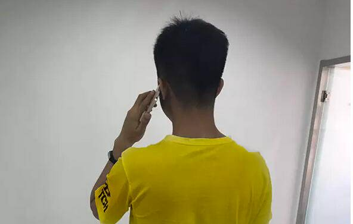
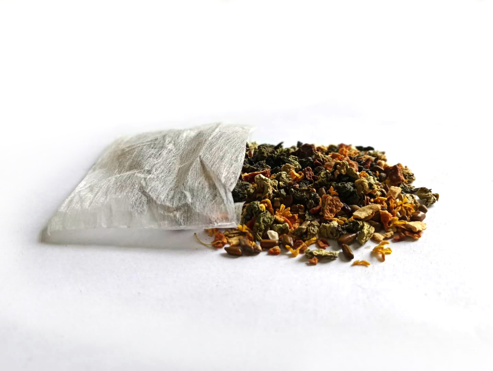
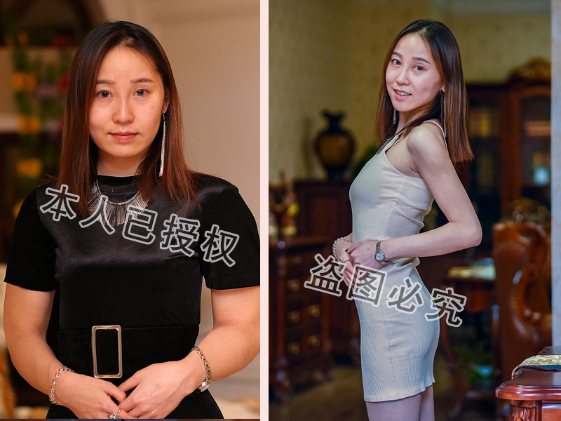
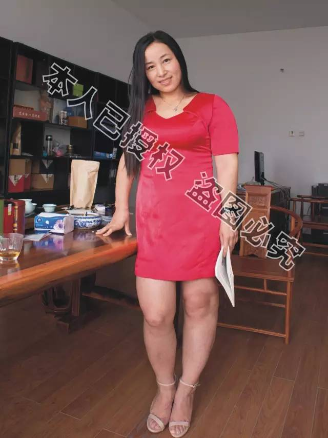
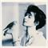
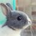

老公爆料：一天一次，狂减30斤，快看，以免删除
原本胖胖的媳妇，突然毫无征兆的狂瘦不止，这让老公心生恐慌，生怕媳妇得了什么病，硬拉着她到医院检查，结果检查费花掉1200，身体没查出什么毛病，却意外发现媳妇一个“不可告人”的秘密。这是刚刚发生在天津和平区一对夫妻身上的事。

据这位心疼媳妇的老公刘先生说：“本来又胖又壮的媳妇，突然瘦的跟面条似的，我能不害怕吗？我们结婚时，她就挺胖，130斤，生完孩子之后，更胖了，158斤。老嚷着要减肥，又没有专业的办法，只能经常节食，导致脸色苍白，体重忽上忽下抵抗力差了很多，有一回还差点晕倒。打那以后，我坚决不让她乱减肥了，我说“我又不嫌弃你胖，没了健康，再苗条有啥用？”
刘先生妻子变瘦之前
“可就在二个月前，我突然发现我媳妇好像瘦了，之后就一天瘦一圈，控制不住的瘦，都100斤以下了，尖下巴也出来了，那小腿细的，跟竹竿似的。我从来没见她这么瘦过，就害怕了。
无缘无故瘦这样，不会得什么病吧。我就赶紧拉她去医院检查，等到常规检查都做完了，各项指标都很正常。完了我还是担心，就让她做核磁看看，900多块钱，结果我刚要交钱，这败家媳妇终于忍不住了，跟我说实话了，让我别瞎花钱了，说她这么瘦，是因为喝了一样东西！”
此时妻子急剧变瘦
“看，就是这种茶。”说着，刘先生倒出这种茶给大家看！

“起初我还纳闷儿，我问我媳妇，这什么呀？我怎么没看见你喝呀？结果我媳妇告诉我，这东西1天喝一次就行，早晨趁我上厕所的工夫就喝了，你说气人不？早告诉我何必花掉一千多块呀！”
这时刘先生媳妇开口了：“我是通过微信订到的这个茶，才喝了不到二个月，就瘦成这样了。我也没想到会瘦这么快，也害怕有啥副作用，所以才跟着去检查了，花一千多块钱，买个心里踏实，值了！”
1天只需喝一次
神秘茶到底有何神奇之处？
误会归误会，既然老婆安然无羔，还变得又瘦又漂亮，这件事也算皆大欢喜。回头再说那个引发误会的神秘茶，它真的那么神奇吗？只要1天喝一次，就能哗哗掉肥肉？
调查得知：该茶由国内一家百强健康集团独立研发，是该企业继成功打造四大“中国弛名商标”之后，又一科研力作，属减肥界顶尖技术产品，几乎供不应求。因 其减肥速效、健康，瘦身同时还能美容排毒抗衰，效果不同凡响，现已被二十几个欧美国家高价引进！
据很多喝过的肥胖人士反应：确实一点不遭罪，也不用减饭量，一天喝一次，天天都在瘦，比抽脂还快。而且喝一段皮肤明显变嫩，减龄效果堪比打肉毒杆菌！
天津的小宁说，她喝上该秘制茶当天，竟排出至少2斤“巨便”，还不腹泻，排完小肚子塌一半，又软又舒服。上秤一量，体重当时掉了二斤半。她自己是又惊又怕，不明白肠道里怎么会有这么多脏东西？赶紧通过微信咨询导师。导师告诉她，她排出的都是身体积存的宿便、毒素和油脂垃圾。继续喝，保证她变瘦变漂亮。
从那以后，小宁几乎一天瘦一圈，一斤，一斤半，2斤，体重天天都在掉，原本像山一样高耸的大肚腩平了，腿细了，腰形出来了……喝了短短40天，整整瘦掉26斤，原本干燥的皮肤也变得水润润的。
厦门的莉莉，原来体重168斤，喝完该茶2个月，不仅瘦掉40斤，脸上的2片黄斑竟然也消失不见！

哈尔滨的兰姐，从126斤瘦到98斤，体检时做彩超发现，乳房结节竟都不见了！
全球最便捷、最速效减肥法
据 悉，这种备受众多胖友热衷的神秘茶，不是药，也不是咖啡、奶昔，它的每一粒都是大自然的恩赐。里面的成分是运用高科技手段，从药食同源的野生植 物中通过21道工序萃取出的活性物质，再配合多种天然植物成分，汇聚成具有超强活性能量的益生菌群，燃烧脂肪同时，还能排毒净化全身！
由于该特殊菌群能量异常强大，喝一次，可持续1天在体内发挥作用！
1天只需喝一次，对身体的扫荡却是“颠覆性的”。一次管1天，持久有效
进入血液，洗血脂，扫垃圾；
进入脏腑，排毒素，清内脂；
进入肠道，清宿便，除肠油……
所到之处能将脂肪毒素统统都带走，瘦身同时，还能通经络，散瘀阻，既是瘦身之王，也是“调养之王”。既能减肥，又能养颜嫩肤，还能预防乳腺增生和肿瘤。只需1天饭后喝一包，10斤，20斤，30斤，40斤，瘦身节奏，任由你把控！
专家指出：该茶集众多野生植物天然精华于一身，喝一次，相当于喝100杯酸奶，吃20斤黄瓜，做12次有氧运动，相当于做15次经络排毒，8次精油按摩。刮油除油效果堪比抽脂机，故在饮用量上一定要注意，一旦超标很容易瘦成皮包骨！
“喝茶减肥”揭竿而起
反对一切“泻、乏、晕”……等“自残式减肥”
节食伤身，腹泻脱水，吃药损肝肾，直接排油破坏代谢平衡……
据悉，活性茶研发之初，宗旨就是：拒绝一切速效却伤身的成分，要瘦，要健康，要更健康！喝活菌，如吃海参，对身体有益无害，喝一段，能瘦身，再喝，容颜嫩，长喝还能和气活血，提高免疫，越喝越年轻。
目前，该茶因其效果非凡，现已被业界尊为“减肥新贵”，全球唯一，日益风靡……
目前全国众多肥胖人士，热衷于这个减肥方法，平均2天开始减重，40天平均减重45.8斤，腰围平均缩减5-12公分，且无一例不良反应者。 使用该方法最多的是生完小孩刚断奶的女性，喝上该茶，瘦的特别快，有的人不到一个月就把怀孕长的肉都减掉了。还有些嘴馋不爱运动的馋人、懒人，一个月也 可以减掉20斤左右。有些爱美的小姑娘，本身不太胖，也想瘦个五斤八斤的，更是轻轻松松就瘦下来了。
相信大多数胖友一说到减肥，都有一堆失败的经验和苦水。但这次，大家千万别把这种神奇的茶和那些没名没姓的、甚至是小作坊制造的、甚至没有正规批号、甚至添加违禁成份的减肥品相提并论！
“深扒”以后，笔者惊讶的发现，该茶绝对是减肥品中的独品，品牌中的大牌，怪不得胖友只要得到它，都一百个放心，一喝到底，一次瘦个够！
论出身：该茶系全国百强药企制造，出身名门，质量上佳；
论口碑：产品问世以来，深受广大消费者信赖，备受称赞和追捧，受益人群与日俱增！
大牌出动，是不是有点用杀牛刀宰鸡的感觉?
看来，今年胖子们的肥肉是保不住了!!
哈尔滨平房区小胖妞果果，减肥前154斤，精通日语和法语，可就因为太胖，工作屡屡受挫，一次恋爱也没谈过。关于以往的减肥历程，果果用4个字总结：痛 苦，心酸！节食、运动、减肥药……五花八门的减肥法，承受着拉肚子、头晕乏力的痛苦，结果换来的却是更疯狂的反弹。

最后，还是跟果果关系特别好的健身教练，给了果果微信号，推荐果果喝这个茶。果果万万没想到，这么简单的方法竟然比她经历的魔鬼减肥训练还管用。1天喝 一次，天天都变瘦，最多的时候一天瘦了2斤8两，关键脸上粗大的毛孔也没了，皮肤变得又白又细，乐得小姑娘直蹦高。最近她已经接到了3家外企的面试通知。
家住汕头的美娟，体重最重时是162斤，喝上这秘制茶，瘦掉58斤，大肚腩瞬间瘪了下去，腰形出来了，形象指数窜上一大截！消灭大肚子，“茶君”绝对专业哟！
石家庄的茵茵，喝秘制茶半个月，减掉19斤，瞬间有了女神范儿！
喝足40天 还有“意外惊喜”
由于该茶含有果蔬营养及丰富的美颜因子，不仅可以强力瘦身，喝足40天以上，身体还可以发生3大变化：
第一：清肠排毒。清除宿便，恢复身体菌群平衡，排肠毒、血毒，痘痘消了，便秘通了，口臭没了；
第二：疏通三瘀。通气瘀、湿瘀、血瘀。体内无瘀，面部无斑；气行血畅，乳腺畅通，痛经消失，盆腔、子宫干净，妇科问题不药而愈；
第三步：养颜抗衰。皮肤变得细滑水润，白嫩Q弹，皱纹变淡，面部提升，越喝越年轻。
因此很多人喝该秘制茶瘦下来以后，为了健康为了美，依然坚持喝。
神奇茶减肥二大绝技
一、当天显效，却不腹泻：喝上两个小时，肠道里沉积多年的宿便，以及代谢出来的毒素、油脂开始向外排，排便量猛增，排完肚子又软又平又舒坦，比机械“灌肠”还管用，体重当天就掉，最重要的是不腹泻，不腹泻，只排宿便、废油和毒素，不减水。
二、成分天然，瘦的快却不反弹：见脂灭脂，见油排油，兼顾排毒、通经、活血，恢复代谢平衡，瘦的快却不反弹。
郑重提醒：比肥胖本身更可怕的是——有害身体的减肥方法。减肥，品牌决定品质，品质决定效果，减肥认准大品牌，全国百强健康集团祝您早日瘦身成功。

- W龙猫
第1楼 2018-05-1
胖啊!!! 人生快迷茫了 ..好想减肥，每次聚会别人都嘲笑我- 方小啤
第2楼 2018-05-1
已经用了1个月了，朋友都说我瘦了好多, 这个减肥产品不用节食 . 而且售后服务超棒! 每隔两三天就主动找我了解情况，产品和服务都太到位了! 点个赞- kali
第3楼 2018-05-1
刚加上了，看了她的朋友圈，确实每天有很多人反馈呢，加了那么多做减肥的，对比下觉得这个挺靠谱的，打算尝试下。
- Vivian大美妞
第4楼 2018-05-1
自从上初中开始，体重一直上涨....我现在都170斤了，真是没谁了！ 我这回试试看吧....太想减肥了- 
- 大鱼卷
第5楼 2018-05-1
关注了很久终于下手了， 减肥产品收到了，用了一段时间感觉还不错，1个月瘦了有17斤,老师的售后很靠谱，专业到不要不要滴，继续使用...减肥路上我来啦！！- candy
第6楼 2018-05-1
已经加了，看她朋友圈好多反馈啊，看到那么多人都减肥成功了…我也要减肥,太心痒痒了啊啊啊！！！！！！- Xing女郎
第7楼 2018-05-1
无意浏览到此文，借此提醒各位减肥者，减肥成功必备几要素，一是心态， 二是找到好方法，三是一个专业人士的指导。 自己瞎鼓捣容易走弯路。老师的个人微信：Gdd712- 
- Xinfgd
第8楼 2018-05-1
我都乱减肥好多次了，每次都失败 ，埃.... 无意间看到这篇文章，果断买了一套！ 期待 ,减肥成功变的美美哒！- link
第9楼 2018-05-1
我早关注老师很久了，觉得老师很靠谱，比某卫视天天现眼的那些“减肥砖家”，地道多了，咨询了不少减肥问题，回答的很专业，通俗易懂。谢谢- 魅蓝
第10楼 2018-05-1
看了朋友圈，减肥知识很详细，我感觉我减肥的春天来临啦....- 悠悠兔
第11楼 2018-05-1
从小就是胖妞，读小学时经常被人欺负，真的很难过，性格也变得自卑。最后才下定决心减肥。真的很感谢，减肥不仅是变美那么简单，是整个人生的蜕变。- 余罪
第12楼 2018-05-1
这个方法很好用，咨询了很多问题。减肥前还很怀疑，但第一天就瘦了1斤，吓了我一跳。1个月下来，瘦了19斤，很开心！- Coco
第13楼 2018-05-1
手臂很粗，都不敢穿背心、吊带裙。用了这种减肥方法后，1个月瘦了21斤，麒麟臂终于不见了！！哈哈哈~~~我准备去疯狂购物，把喜欢的衣服都买回家- 糖糖
第14楼 2018-05-1
生完宝宝后，一直瘦不下来，肚子几圈肥肉，真是烦死人了。后来在一个宝妈群上看到这种减肥方式，大家都说这个减肥方案不错，是根据体质定制的。用了这个的减肥方案，没想到真的瘦了。减了24斤，开心死啦！！推荐一下老师的个人微信：Gdd712- 芦苇的爱
第15楼 2018-05-1
自从上大学后，体重一直往上飙升，就没下过100斤。女生都是爱美的，3位数的体重真的令我很在意。所以我找到了这个减肥方法，一个月的时间体重降到2位数，真的太有效了！- 周彤
第16楼 2018-05-1
出来工作后，就不喜欢运动了。经常应酬，大鱼大肉的，长膘了都不在意。后来公司体检，医生说我有"三高"，那时才知道害怕。幸好找到了这种减肥方式，通过一段时间减肥，体重降了33斤，身体也变好了。-
首页 导航 吐槽 登录
QQ.com